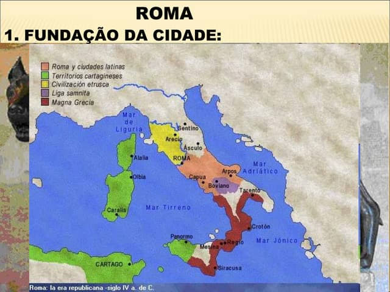
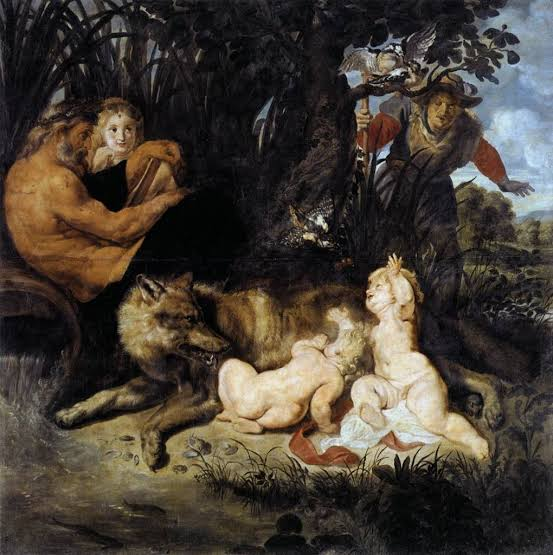
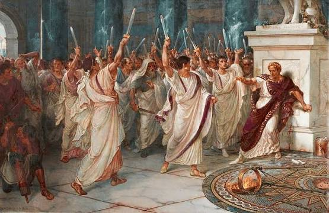
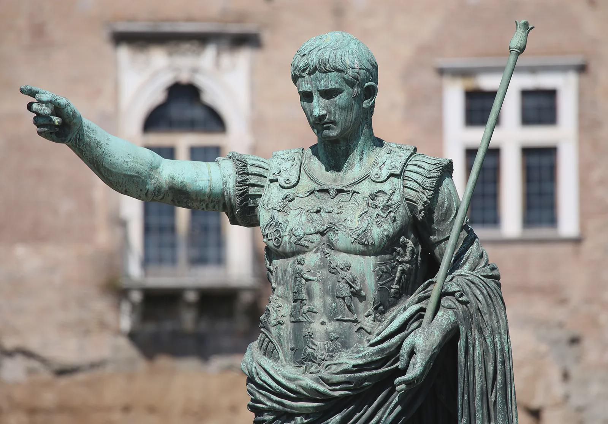
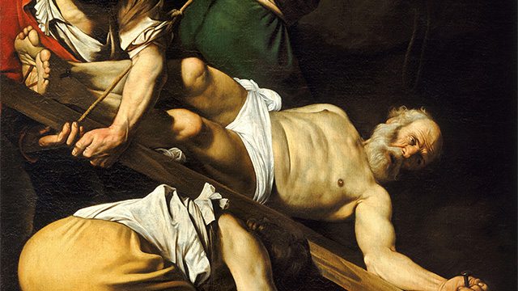
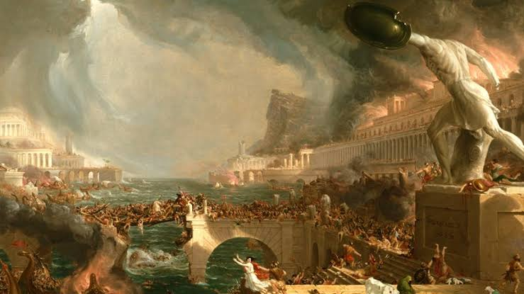
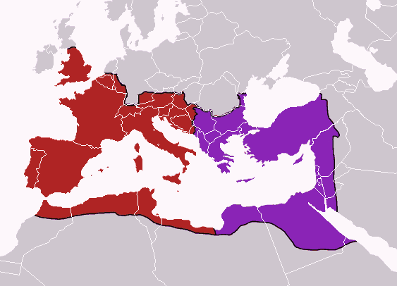
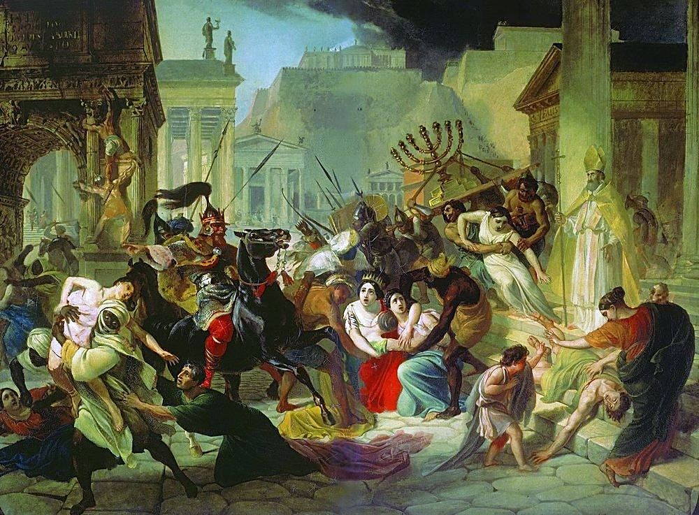
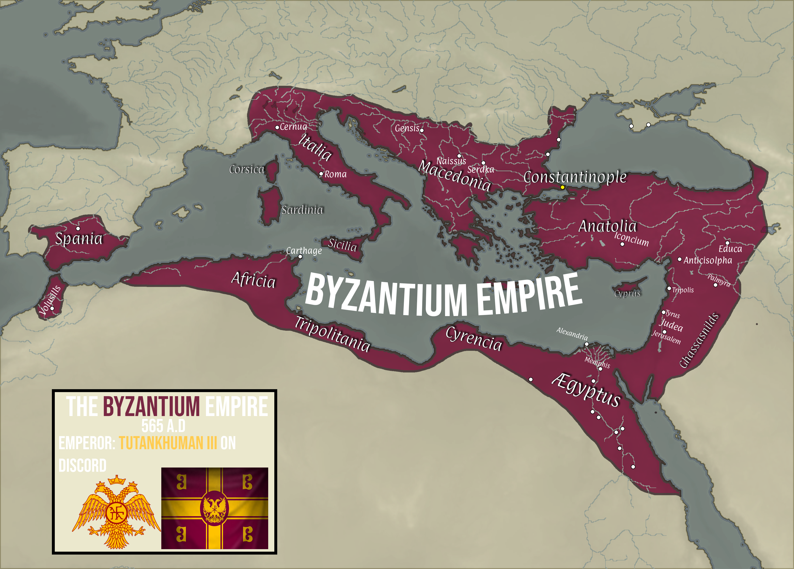
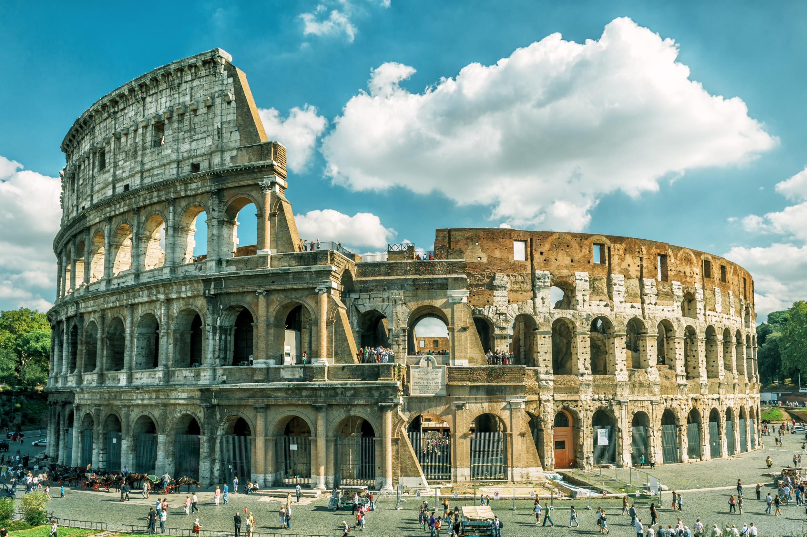

O Império Romano: Formação, Expansão e Legado Histórico
O Império Romano constituiu uma das mais importantes estruturas políticas da Antiguidade, exercendo profunda influência sobre a organização do mundo mediterrânico durante vários séculos. Sua história está associada a processos de expansão militar, integração cultural, desenvolvimento institucional e transformação social que contribuíram para moldar diversos aspectos da civilização ocidental.
Embora suas origens remontem à cidade de Roma, fundada na Península Itálica durante o século VIII a.C., o império alcançou dimensões continentais e incorporou povos de diferentes línguas, culturas e tradições. O estudo de sua trajetória permite compreender não apenas a evolução das sociedades antigas, mas também a formação de instituições políticas, jurídicas e culturais que permanecem influentes até os dias atuais.

As Origens de Roma
De acordo com a tradição romana, a cidade foi fundada em 753 a.C. pelos irmãos Rômulo e Remo. Embora essa narrativa seja considerada lendária, evidências arqueológicas indicam que a região começou a ser ocupada por comunidades latinas durante o século VIII a.C. Localizada às margens do rio Tibre, Roma desenvolveu-se como um importante centro comercial e estratégico da Península Itálica.
Durante seus primeiros séculos de existência, Roma foi governada por reis. Em 509 a.C., a monarquia foi substituída pela República Romana, sistema político baseado na atuação de magistrados eleitos e do Senado, instituição que exerceu grande influência sobre os rumos do Estado romano.

A República Romana
Ao longo do período republicano, Roma expandiu progressivamente seu território por meio de alianças, conquistas militares e processos de integração política. A cidade consolidou seu domínio sobre toda a Península Itálica e posteriormente voltou sua atenção para o Mediterrâneo.
As Guerras Púnicas, travadas entre Roma e Cartago entre os séculos III e II a.C., representaram um dos momentos decisivos dessa expansão. A vitória romana garantiu o controle das principais rotas comerciais da região e permitiu a formação de um vasto império territorial.
O crescimento do poder romano trouxe profundas transformações econômicas e sociais. Entretanto, também gerou conflitos internos, disputas políticas e guerras civis que enfraqueceram as instituições republicanas durante o século I a.C.

O Nascimento do Império
Após o assassinato de Júlio César em 44 a.C., Roma mergulhou em um novo período de instabilidade política. As disputas pelo poder terminaram com a vitória de Otaviano, herdeiro de César, que recebeu do Senado o título de Augusto em 27 a.C.
Esse acontecimento é tradicionalmente considerado o início do Império Romano. Embora algumas instituições republicanas tenham sido preservadas formalmente, o poder passou a concentrar-se na figura do imperador, inaugurando uma nova etapa da história romana.

O Auge do Império Romano
Entre os séculos I e II d.C., o Império Romano alcançou seu período de maior estabilidade política, prosperidade econômica e expansão territorial. Esse momento, frequentemente denominado Pax Romana, caracterizou-se pela relativa ausência de conflitos internos e pelo fortalecimento da administração imperial.
A ampla rede de estradas construída pelos romanos facilitava o deslocamento de exércitos, mercadorias e informações entre as províncias. O comércio floresceu em grande parte do Mediterrâneo, promovendo a integração econômica de territórios separados por milhares de quilômetros.
Sob o governo do imperador Trajano, entre 98 e 117 d.C., o império atingiu sua máxima extensão territorial, abrangendo regiões da Europa, do Norte da África e do Oriente Médio.

Sociedade e Cultura
A sociedade romana possuía uma estrutura hierárquica complexa, marcada por diferenças de riqueza, prestígio social e direitos políticos. Patrícios, plebeus, libertos e escravos compunham os principais grupos sociais existentes no império.
O latim era a língua oficial da administração romana, enquanto o grego permanecia amplamente utilizado nas regiões orientais. A cultura romana absorveu importantes elementos da tradição grega, especialmente nas áreas da filosofia, literatura, arte e educação.
A arquitetura destacou-se pela construção de estradas, pontes, aquedutos, templos e anfiteatros monumentais, muitos dos quais permanecem preservados até os dias atuais.

O Cristianismo e as Transformações Religiosas
O cristianismo surgiu no século I d.C. na província romana da Judeia. Inicialmente perseguida pelas autoridades imperiais, a nova religião expandiu-se gradualmente por diversas regiões do império.
Em 313 d.C., o imperador Constantino promulgou o Édito de Milão, que garantiu liberdade de culto aos cristãos. Décadas depois, o cristianismo tornou-se a religião oficial do Estado romano, transformando profundamente a vida cultural e religiosa do império.

A Crise do Século III
A partir do século III, o Império Romano passou a enfrentar graves dificuldades políticas, econômicas e militares. Guerras civis frequentes, inflação, instabilidade administrativa e invasões de povos estrangeiros colocaram em risco a unidade imperial.
As sucessivas crises demonstraram as dificuldades de administrar um território tão vasto e heterogêneo, levando os governantes a promover importantes reformas administrativas e militares.

A Divisão do Império
No final do século IV, o império foi definitivamente dividido em duas partes: o Império Romano do Ocidente e o Império Romano do Oriente. Essa divisão buscava facilitar a administração e a defesa das fronteiras, constantemente ameaçadas por invasões.
Enquanto a parte oriental possuía maior estabilidade econômica e militar, o Ocidente enfrentava crescentes dificuldades para manter sua autoridade sobre as províncias.

A Queda do Império Romano do Ocidente
Durante os séculos IV e V, a pressão exercida por diversos povos germânicos aumentou significativamente. Em 410 d.C., Roma foi saqueada pelos visigodos, fato que teve grande impacto simbólico em todo o mundo romano.
Finalmente, em 476 d.C., o chefe germânico Odoacro depôs o imperador Rômulo Augusto. Tradicionalmente, esse acontecimento é considerado o marco final do Império Romano do Ocidente e o início da Idade Média na Europa Ocidental.

O Império Romano do Oriente
A porção oriental do império sobreviveu por quase mil anos após a queda do Ocidente. Com capital em Constantinopla, o chamado Império Bizantino preservou instituições romanas, tradições culturais gregas e a fé cristã.
O império manteve papel fundamental na preservação do conhecimento clássico e na história do Mediterrâneo até sua conquista pelos turcos otomanos em 1453.

Legado Histórico
O legado romano permanece presente em diversos aspectos da sociedade contemporânea. O direito romano influenciou sistemas jurídicos modernos, enquanto o latim deu origem às línguas românicas, incluindo o português.
Além disso, conceitos relacionados à cidadania, administração pública, engenharia, urbanismo e organização política continuam refletindo a profunda influência exercida por Roma ao longo da história.

Referências
Encyclopaedia Britannica – Roman Empire.
ncyclopaedia Britannica – Byzantine Empire.
World History Encyclopedia – Roman Empire.
Encyclopaedia Britannica – Height and Decline of Imperial Rome.
Encyclopaedia Britannica – Timeline of the Roman Empire.